香港島の繁華街、銅鑼湾の高架下に
不思議な占いスポットがあると聞いて出向いてみた。
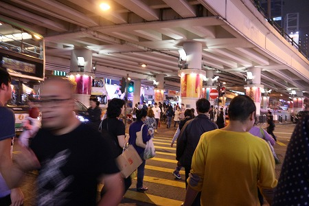
東京で言えば渋谷のようなところ。
いや、言い過ぎか。じゃー、銀座！ちょっと違うなー。池袋…あたりかな。
いずれにせよ多くの人が行きかう、都心部である。
場所は鵝頸橋という高速道路の下、ふたつの高速道路が交差するジャンクションにも近く、
風水的にも意味のある場所だとか。
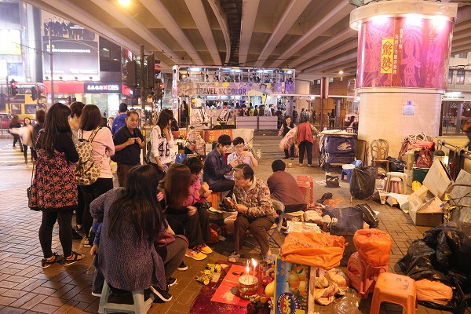
そんな高架下に行ってみると、そこだけが
不思議な解放区になっている。
周辺はデパートやショップなどが並ぶ小奇麗なエリアだが、ここだけは色々なものが積み上げられ雑多な雰囲気を醸し出している。
ここが香港で人気のスピリチュアルスポットである打小人のホームフィールドなのだ。
地べたにシートが敷かれ、何体かの神像が置かれている。
そこにプラの椅子がいくつか置かれており、おばちゃんが待機している、という按配。
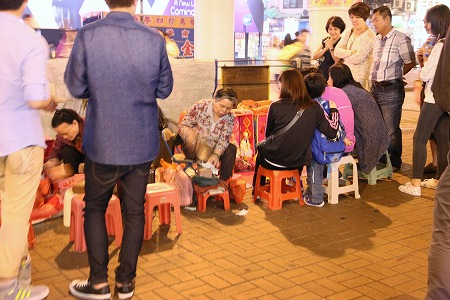
後ろにはおばちゃんの私物などが詰まれており、ここがその手のスポットだと判らなければ
小奇麗なホームレスの溜り場なのか？という感じ。
恐山のイタコさんを引き合いに出すまでもなく、ある意味民間信仰の巫女のショバっぽいといえばそれまでだが…。
そうこうしている内に、女性3人子供1人という構成のグループがやってきた。
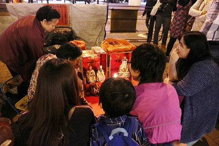
後ろから見物させてもらう。
通りがかりの人たちも興味深そうに眺めている。
巫女のおばちゃんは
拝神婆と呼ばれる。身も蓋もない呼び名だな。
巫女、というと勝手に清楚なお嬢さんを期待をする輩もいるので、以降この呼び名で統一させていただく。
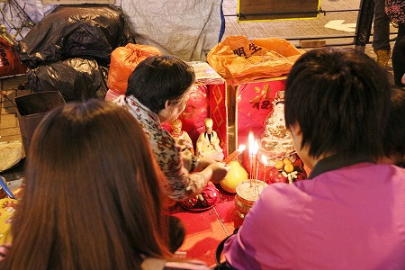
花柄シャツのおばちゃん、こと拝神婆、おもむろに線香に火を点け、黄色い紙を蝋燭の火に翳しはじめた。
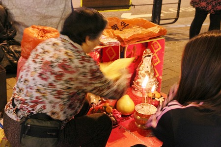
これは小人が描かれた紙である。
小人とは天草海坊主（知らないアンダー40はおいてきます、各自ググッて自習するように）やR2D2の中に入っていた人（同、各自ググッてついてくるように）や小倭人王国（これは雑誌
怪処を読もう！）ではなくて、自分の目的や野心を達成する上で邪魔になる人や不幸をもたらす人のことを指している。
つまり邪魔なヤツ、ということだ。
邪魔なヤツから邪気を払うのがこの打小人の目的なのだ。
まずは小人が描かれた紙を各人の頭に振りかざす。
頭の上でバシバシ！
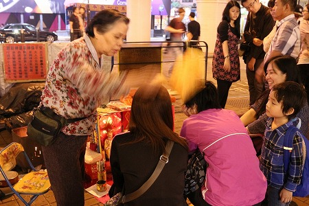
そしてアンダースローでバシバシ！
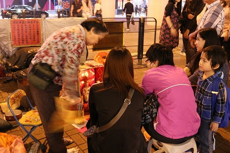
隣の人にもバシバシ！
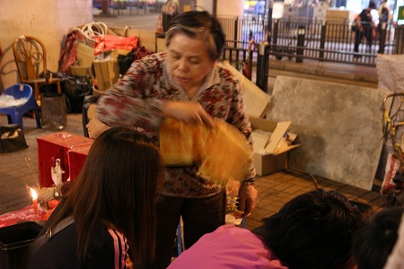
やってる拝神婆は真剣そのものだが、やられてるほうはチョット半笑い。
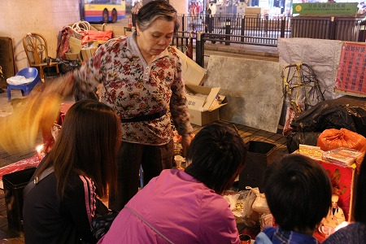
この微妙な温度差に
この習俗の本質が隠されているように思える。
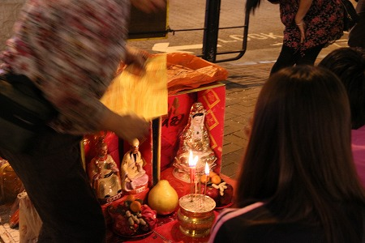
正面には3体の神像が箱の中に納まっている。
右が観音サマ、左には黄大仙と斉天大聖。
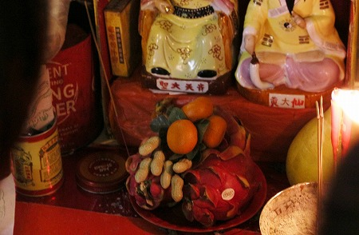
供え物のドラゴンフルーツとみかんとピーナッツの組み合わせが妙に香港っぽい。
黄大仙は古代の中国の僧だが、現在では
儒仏道教混成の神様で、特にここ香港の
黄大仙廟は
占いと民間信仰のメッカとして有名だ。
斉天大聖とは要は
孫悟空のこと。
元々は西遊記の登場人物（猿？）だが後世に芝居などで人気を博し、道教の神様に昇格した変り種の神様だが、民間信仰の世界では大人気で、あちこちの道教寺院で祀られているのを目にする。
要は、宗教の厳密な教義はそっちのけで
民間に人気のある神様を現世利益を願う人々のニーズに合わせて登用しているのだ。
コレ、大事なとこですよ。
宗教には教義があって、それを拠り所に信仰が成立していると思うでしょ。
そんなのはごくごく限られた一部の稀なケースみたいですよ…。
世の中のほとんどの信仰は現世利益に基づいたものなのだ。
例えばお金持ちになれますように、とか、子供が出来ますように、とか憎いアンチクショウが何とかナニしますように、とか。
良き転生とか永遠の平穏とか魂の救済なんてのは大寺院や大教会の上座に座って、地平線の向こうを見てる人だけの発想ですよ。
そんなことより何とかしなきゃいけないのは今痛くて仕方ない病気や来週返さなきゃいけない借金や来週に迫った入学試験や酔っ払って暴力振るうダンナとかなんだな。
なので重要なのは荘厳な宮殿のような寺院ではなく、高架下のプラの椅子でもいいから、確実に願いが叶うことなのだ。
コレ、民間信仰の基本中の基本ね。
願いが叶ってくれさえすればボロい椅子でも良い。立派な教義や荘厳な堂宇なんて二の次三の次、なのである。
そういう意味でこの打小人をはじめとする現世利益を優先する民間信仰のあり方は、ある意味健全な信仰なんだと思うのですよ。
まあ、皆さん宗教に対しては様々な持論がおありでしょうから異論は認めまくりなんですけど、この話を続けてると拝神婆のライブが終わっちゃうのでこの辺で。
打小人の世界に踊りましょうぞ。
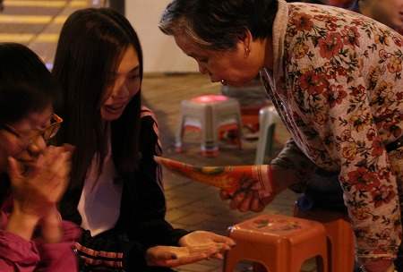
時折、呪文のようなものを唱え、何やら真面目に語りかけるオババ。
客の方は笑いをこらえるのに必死、といった表情。
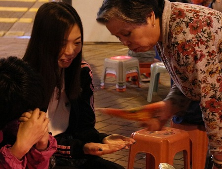
真面目な顔してすごい面白いことを言ってるんだろうか？オババ。
お隣にセッテイングされたところにはまだお客さんが来ないようだ。
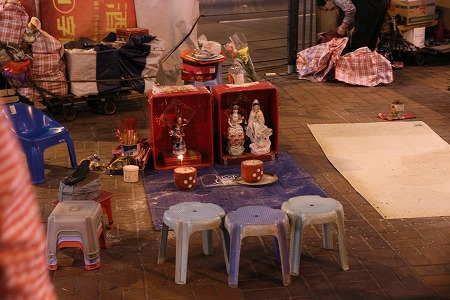
信仰といえども、高度資本主義が徹底された香港ゆえ、
結果を残さない拝神婆には客は来ないのである。
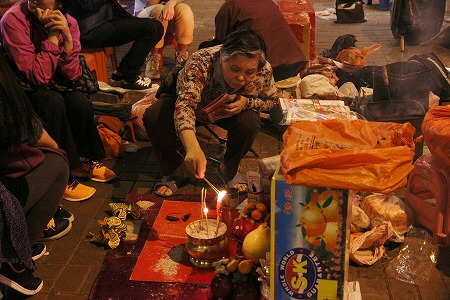
さて、花柄オババ、もとい花柄拝神婆のパフォーマンスに戻ろう。
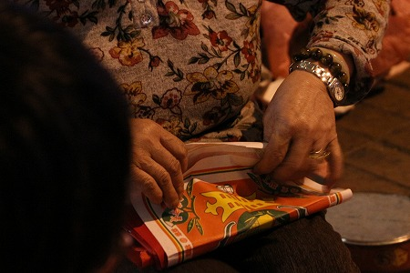
また別の紙を用意するオババ。
ん？これは先ほど
許願樹で見た紙では？

その紙に点火してます。
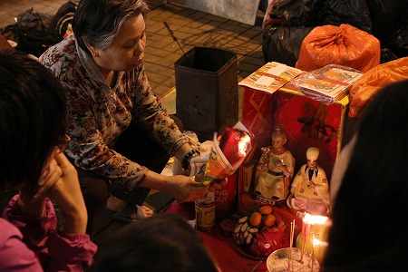
また別の紙を用意するオババ。
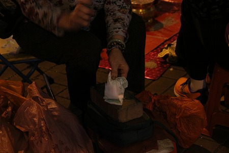
ここでついに打小人の名物である
小人の紙を靴で叩くパフォーマンスが始まった！
取り出したのは金ぴかのカンフーシューズ。
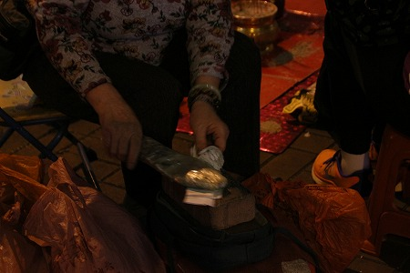
コレで災いをなす小人を根こそぎ退散！とばかりに叩きまくる。
バンバンバンバン！
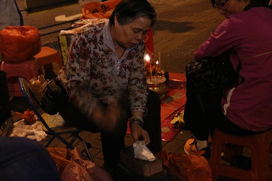
結構凄い勢いで小人の描いてある紙をぶっ叩く！
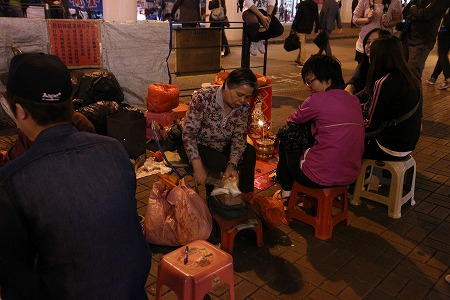
周りで見ていた皆さんは飽きちゃって居なくなってるし、肝心の依頼人も子供がぐずりだしたので一人席を外しちゃって、なんだか空回りっぽい感じになっちゃった。
一方、隣のオババは暫く暇そうにしていたが…。
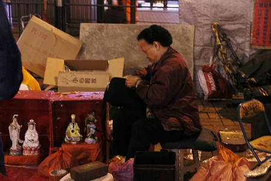
ようやく若い男子二名が客としてやってきた。
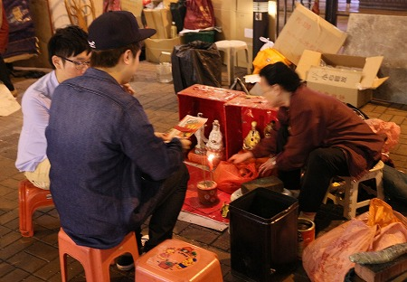
隣の拝神婆に負けじとばかりに
ハイスピードで連打するオババ。
そのスピードは鉄定規をビョヨヨ〜ン、ビョヨヨ〜ンと使ったハイパーオリンピック並み（くれぐれも言うがわかんない人はおいてきます、ちなみに私は高校生の頃ゲーセンのオヤジに鉄定規禁止令を下されました、なぜなら100ｍを5秒台で走れるから！…じゃなくて、ボタンがボロボロになるからだよ）。
もちろんアイコンタクトで許可を得て私も隣でびっちり見物させていただきました。
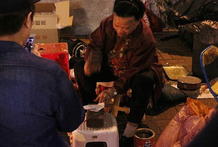
依頼者は打小人の様子をiPhoneでずーっと撮影していた。
どちらかというと撮影そのものが目的のご様子。
もしかしたら香港の珍スポットブロガーなのかも知れないっすね。